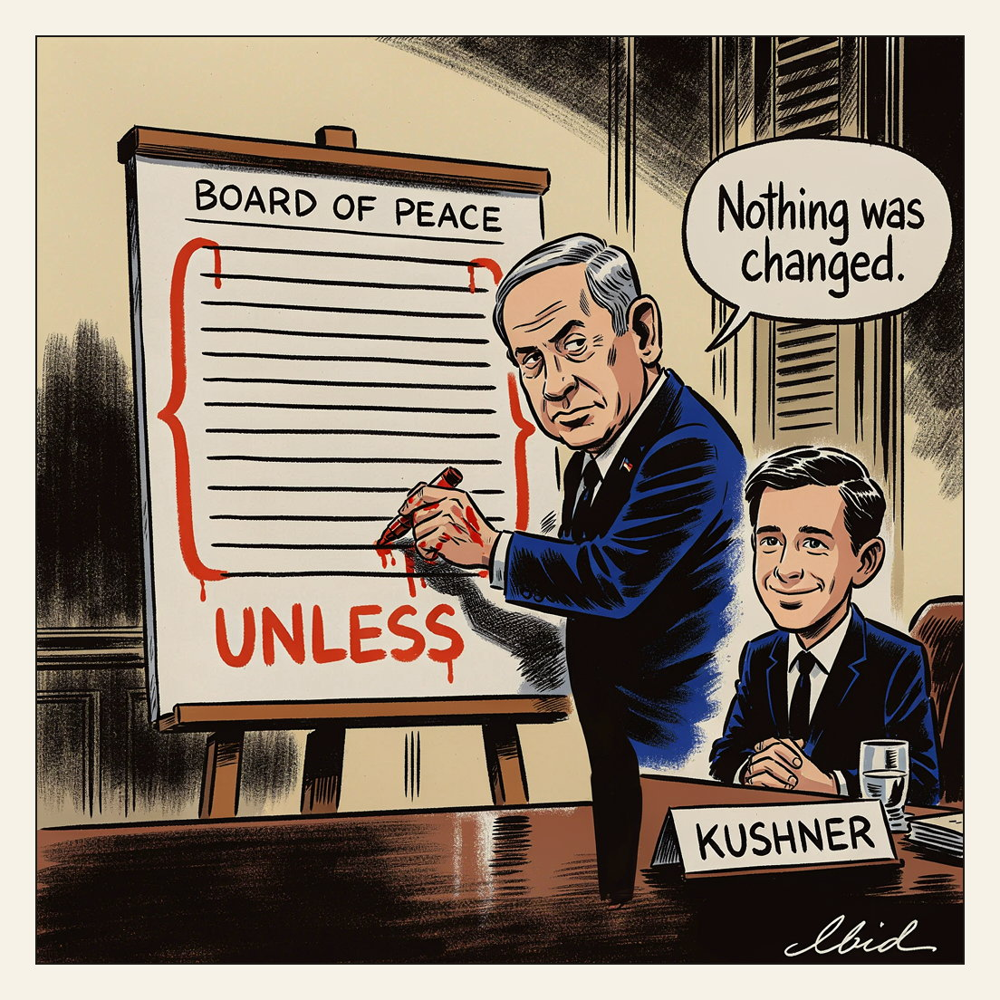

Clearing up the misunderstandings took four hours.
Unless

Jared Kushner met Israeli Prime Minister Benjamin Netanyahu in Jerusalem for nearly four hours after Israel rejected the 15-point Gaza plan promoted by Trump's "Board of Peace." The plan pairs gradual Hamas disarmament and the handover of Gaza governance to an international force with Israeli withdrawal; Kushner said he had talked Netanyahu through "misunderstandings and misinformation" about it, and had earlier held rare direct talks with Hamas leaders in Egypt. Analyst Mouin Rabbani says Israel, backed by Kushner, now seeks terms under which it would not be obliged to carry out any of its obligations unless and until Hamas was fully disarmed — what Rabbani calls a "poison pill."